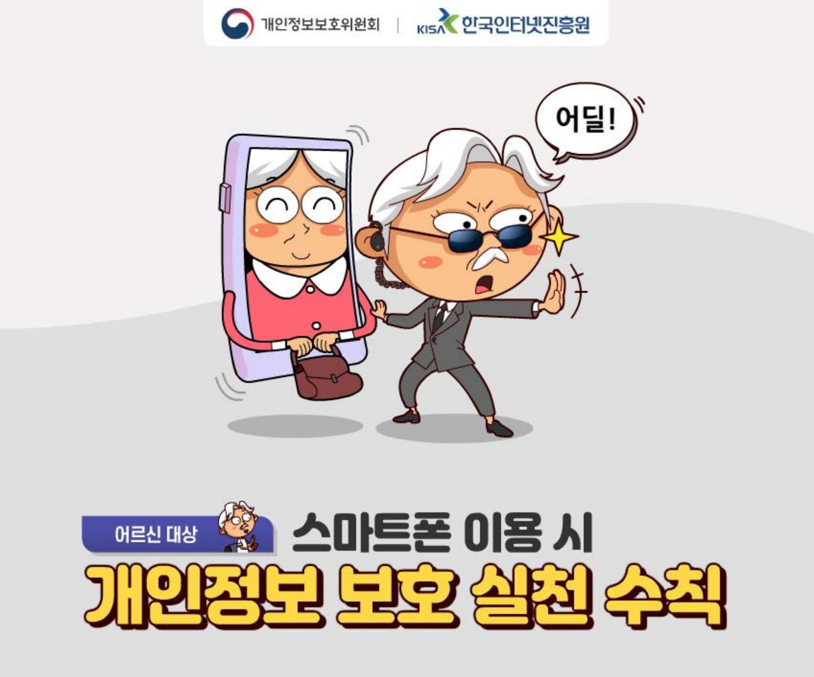

|
 |  |
 |
세대별로 실천해야 할 개인정보 보호 수칙 아동편(초등학생 손자)_개인정보보호 실천_카드뉴스 (출처: 개인정보포털, www.privacy.go.kr) |
세대별로 실천해야 할 개인정보 보호 수칙 중장년편(부모)_개인정보보호 실천_카드뉴스 (출처: 개인정보포털, www.privacy.go.kr) |
세대별로 실천해야 할 개인정보 보호 수칙 어르신편(조부모)_개인정보보호 실천_카드뉴스 (출처: 개인정보포털, www.privacy.go.kr) |
사이버폭력예방교육 서비스 안내 어플을 통해 함께 실천하는 사이버폭력 예방 가이드를 확인할 수 있도록 정보 제공 |